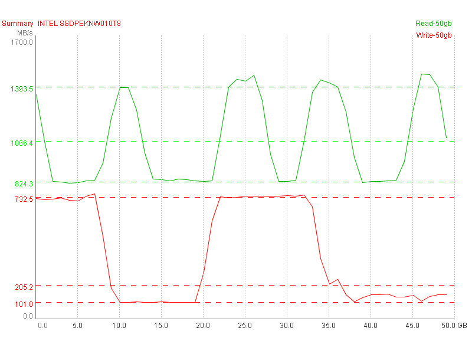
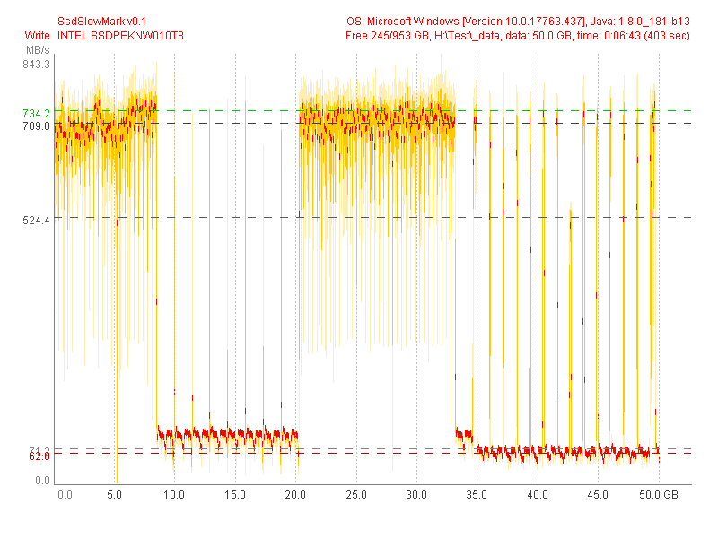
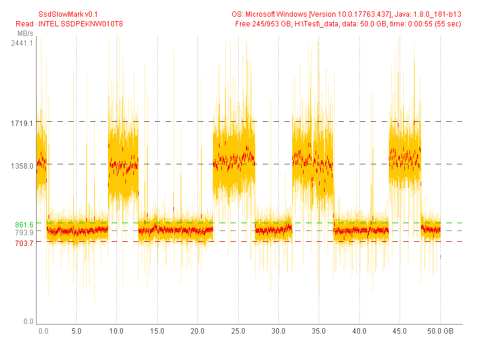

INTEL SSDPEKNW010T8 (Test 50 GB) |
|
| SsdSlowMark v0.1, OS: Microsoft Windows [Version 10.0.17763.437], Java: 1.8.0_181-b13 | |
| Read Performance | Write Performance |
avg.max: 1719.1 MB/s, 17.4% (8.7 GB)
mid: 1358.0 MB/s, 38.4% (19.2 GB)
min: 793.9 MB/s, 61.6% (30.8 GB)
typ.max: 861.6 MB/s, 62.3% (31.2 GB)
typ.min: 703.7 MB/s, 61.4% (30.7 GB)
|
avg.max: 709.0 MB/s, 45.3% (22.6 GB)
mid: 524.4 MB/s, 3.4% (1.7 GB)
min: 71.2 MB/s, 51.8% (25.9 GB)
typ.max: 734.2 MB/s, 45.0% (22.5 GB)
typ.min: 62.8 MB/s, 51.8% (25.9 GB)
|
|  | |
|  | |
|  | |